1- Introduction
1- المقدمة
L’appareil urinaire ou émulgent, est un ensemble d’organes, destinés à la production et à l’évacuation de l’urine.
الجهاز البولي هو مجموعة من الأعضاء المسؤولة عن إنتاج وإخراج البول.
La fonction sécrétoire s’effectue au niveau des unités morpho-fonctionnelles des reins, appelées néphrons.
تتم عملية الإفراز على مستوى الوحدات التركيبية والوظيفية للكلى، والتي تُعرف باسم النيفرونات.
L’excrétion de l’urine vers l’extérieur, est assurée par les voies urinaires, hautes qui débutent dans le rein (calices, bassinet), se poursuivent par l’uretère, et se continue par les voies urinaires basses (vessie, urètre).
يتم إخراج البول عبر الجهاز البولي، حيث تبدأ القنوات البولية العليا في الكلى (الكؤوس، الحوض الكلوي) وتستمر عبر الحالب، ثم تصل إلى القنوات البولية السفلى (المثانة، الإحليل).
Les Calices - الكؤوس الكلوية
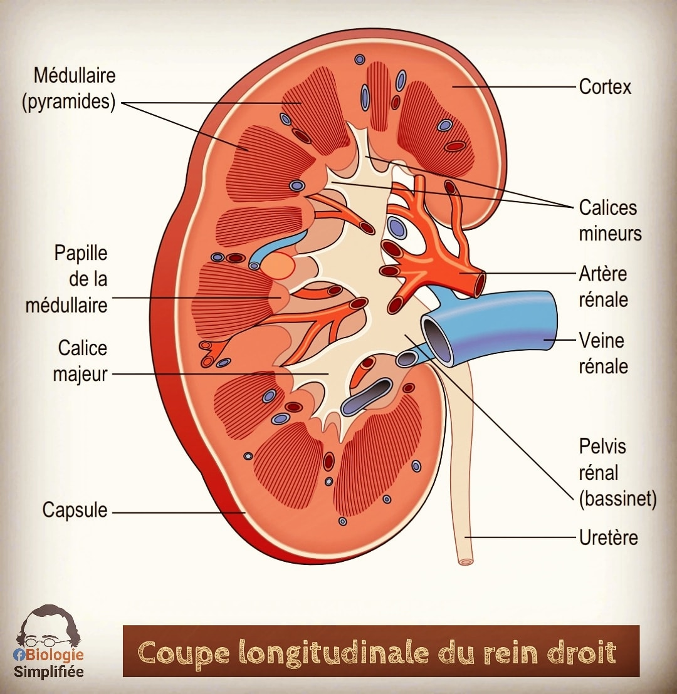Les calices rénaux sont des structures creuses situées dans le rein. Ils collectent l'urine produite par les néphrons avant qu'elle ne passe dans le bassinet rénal, puis dans l'uretère pour être évacuée.
الكؤوس الكلوية هي تجاويف داخل الكلية، وظيفتها جمع البول المنتج بواسطة النيفرونات قبل انتقاله إلى الحوض الكلوي، ثم الحالب ليتم إخراجه خارج الجسم.
Le Bassinet - الحوض الكلوي

Le bassinet rénal est une cavité en forme d'entonnoir située au centre du rein. Il reçoit l'urine des calices rénaux et la dirige vers l'uretère pour son excrétion hors du corps.
الحوض الكلوي هو تجويف يشبه القمع يقع في مركز الكلية، وظيفته استقبال البول من الكؤوس الكلوية وتوجيهه نحو الحالب ليتم إخراجه خارج الجسم.
Cet appareil provient de la partie intermédiaire du mésoblaste intra-embryonnaire (3ème feuillet).
يتكون هذا الجهاز من الجزء الأوسط من الأديم المتوسط داخل الجنين (الطبقة الثالثة).
La Partie Intermédiaire du Mésoblaste - الجزء الأوسط من الأديم المتوسط
La partie intermédiaire du mésoblaste intra-embryonnaire est une structure embryonnaire essentielle. Elle donne naissance au cordon néphrogène, qui est à l'origine de la formation de la majeure partie de l'appareil urinaire.
الجزء الأوسط من الأديم المتوسط داخل الجنين هو بنية جنينية أساسية. ينتج عن هذا الجزء الحبل الكلوي، الذي يعد الأساس لتكوين معظم أجزاء الجهاز البولي.
 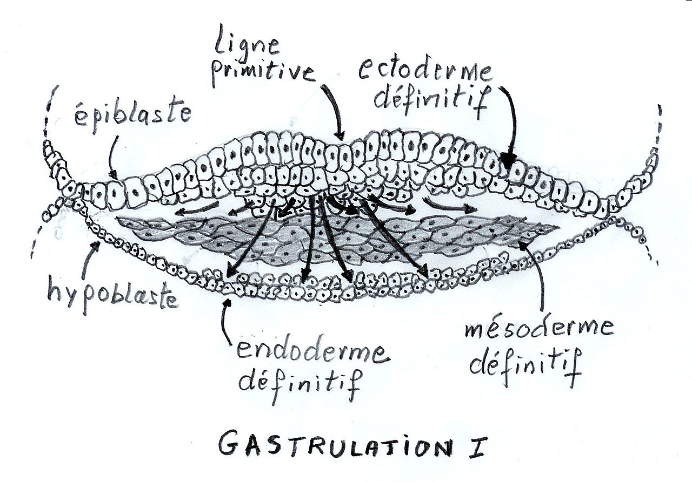
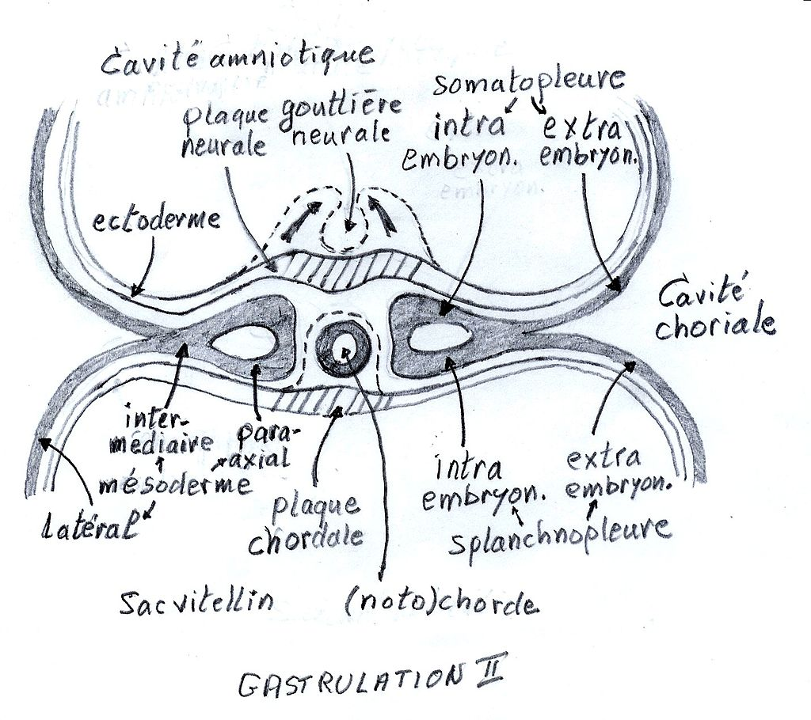
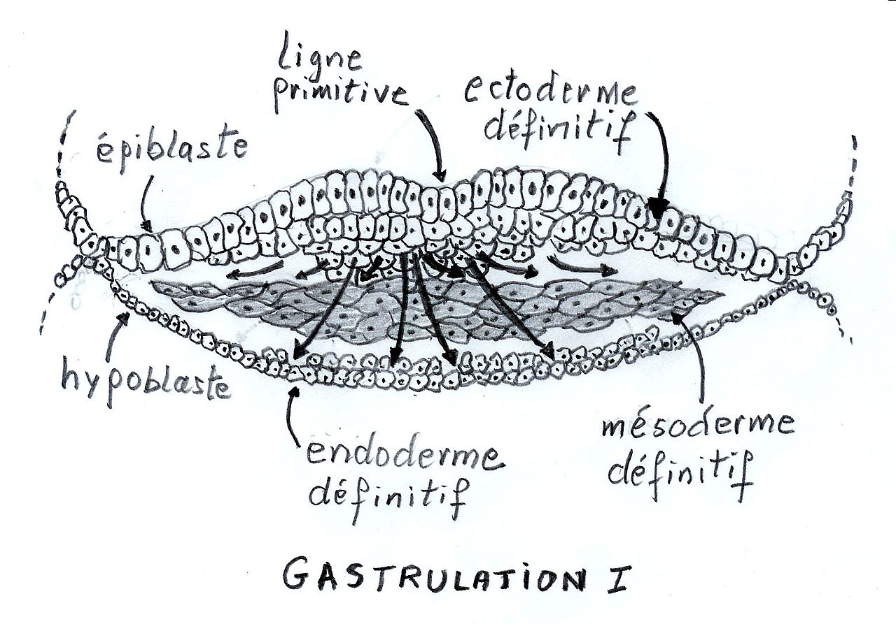
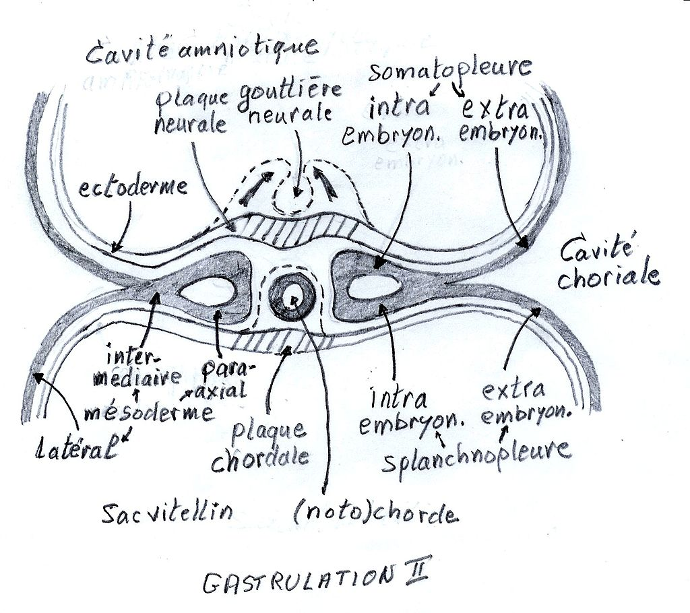
Le mésoblaste intermédiaire donne un cordon plein appelé cordon néphrogène à l'origine de la majeure partie de l’appareil urinaire, ce dernier subit une métamérisation ou segmentation par paires depuis le niveau cervical jusqu’au niveau sacral.
الأديم المتوسط الوسطي يُنتج حبلاً صلبًا يُعرف باسم الحبل الكلوي، وهو الأساس لمعظم أجزاء الجهاز البولي، حيث يخضع لعملية تقسيم أو تحول قطاعي من المستوى العنقي إلى العجزي.
Le mésoblaste intermédiaire participe aussi à la formation de l’appareil génital mâle.
يساهم الأديم المتوسط الوسطي أيضًا في تكوين الجهاز التناسلي الذكري.
Explication du Métamérisation et Segmentation - شرح التحول الشكلي والتجزئة
Le cordon néphrogène subit une métamérisation ou une segmentation par paires, allant du niveau cervical jusqu'au niveau sacral. Ce processus permet la formation progressive des structures du système urinaire.
يخضع الحبل الكلوي لعملية تحول شكلي (Métamérisation) أو تقسيم إلى قطع (Segmentation) بشكل زوجي، بدءًا من المستوى العنقي وحتى المستوى العجزي. هذه العملية ضرورية لتكوين الجهاز البولي بشكل منظم.
🔬 Exemple - مثال توضيحي
Au début du développement embryonnaire, le cordon néphrogène est une structure continue. Progressivement, il se segmente en unités appelées néphrotomes, qui se forment par paires de manière symétrique des deux côtés du corps.
في بداية التطور الجنيني، يكون الحبل الكلوي بنية مستمرة. مع مرور الوقت، ينقسم إلى وحدات تُعرف باسم الكُليّات الأولية (néphrotomes)، حيث تتشكل بشكل متناظر على جانبي الجسم.
📌 Développement des reins - تطور الكلى
- Pronephros - الكُليّة القحفية: Se forme dans la région cervicale mais est non fonctionnelle.
- Mésonéphros - الكُليّة الوسطى: Située dans la région thoraco-lombaire et fonctionne temporairement.
- Métanéphros - الكُليّة النهائية: Se développe dans la région sacrale et devient le rein définitif.
- الكُليّة القحفية (Pronephros): تظهر في المنطقة العنقية لكنها غير وظيفية.
- الكُليّة الوسطى (Mésonéphros): تتطور في المنطقة الصدرية والقطنية وتعمل لفترة مؤقتة.
- الكُليّة النهائية (Métanéphros): تتشكل في المنطقة العجزية وتصبح الكلى الدائمة.
🚆 Analogie - تشبيه مبسط
Ce processus est comparable à la formation d'un train, où chaque wagon représente une unité rénale qui apparaît successivement du haut vers le bas du corps.
يمكن تشبيه هذه العملية بتكوين **قطار**، حيث تمثل كل عربة وحدة كلوية تظهر بشكل متتابع من الأعلى إلى الأسفل.
Le Cordon Néphrogène - الحبل الكلوي
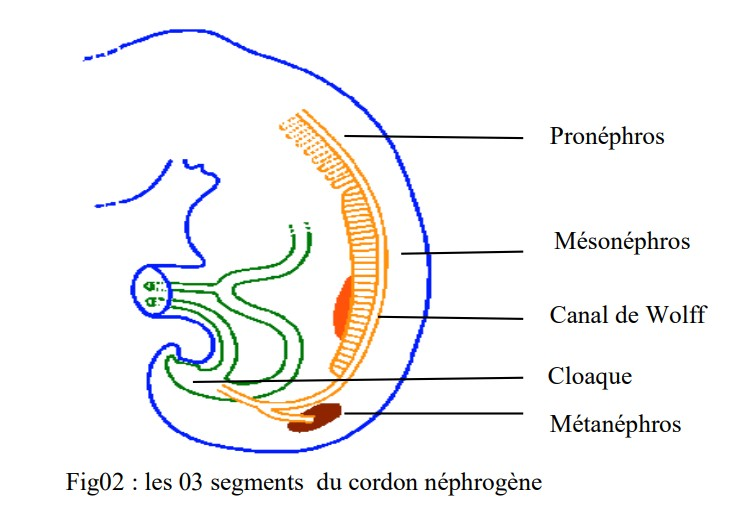 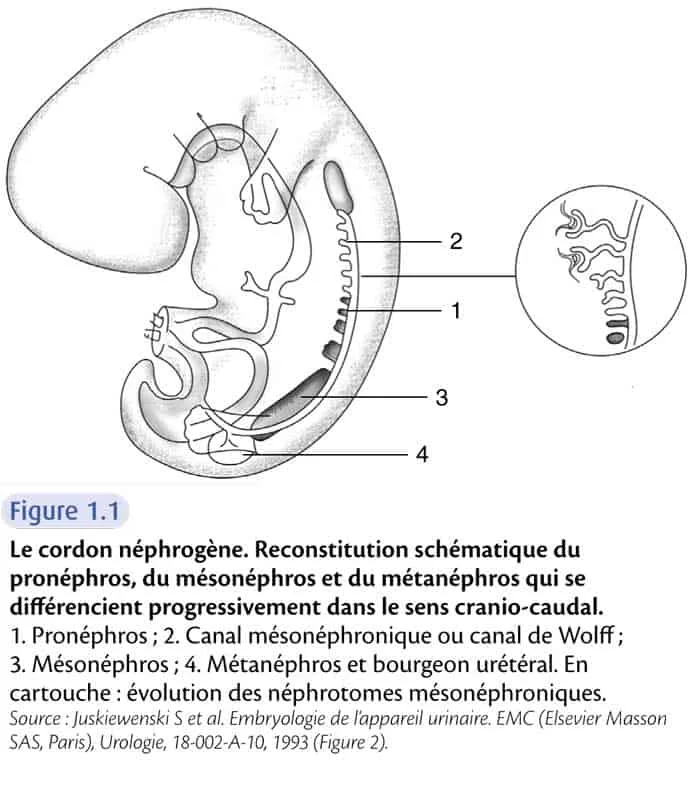إعادة بناء تخطيطي للحبل الكلوي، يوضح مراحل تطور الكُلى: الكُليّة القحفية، الكُليّة الوسطى، والكُليّة النهائية.
Le cordon néphrogène est une structure embryonnaire essentielle dans le développement du système urinaire. Il se différencie progressivement dans le sens cranio-caudal en trois étapes principales :
- Pronéphros (1) : Première ébauche rénale, transitoire et non fonctionnelle.
- Mésonéphros (3) : Fonctionne temporairement et joue un rôle clé dans le développement du rein définitif.
- Métanéphros (4) : Stade final qui donnera naissance au rein adulte.
الحبل الكلوي هو بنية جنينية أساسية في تطور الجهاز البولي، حيث يتمايز تدريجيًا من الأعلى إلى الأسفل (Cranio-Caudal) عبر ثلاث مراحل رئيسية:
- الكُليّة القحفية (Pronéphros) (1): المرحلة الأولية، مؤقتة وغير وظيفية.
- الكُليّة الوسطى (Mésonéphros) (3): تعمل لفترة مؤقتة وتلعب دورًا مهمًا في تكوين الكلية النهائية.
- الكُليّة النهائية (Métanéphros) (4): المرحلة الأخيرة التي تتطور إلى الكلى الدائمة.
📌 Le canal mésonéphronique (2), ou canal de Wolff, joue un rôle clé en connectant les structures urinaires en développement.
📌 القناة الوسطى الكلوية (2) أو قناة وولف تلعب دورًا مهمًا في ربط الأعضاء البولية أثناء تطورها.
🔬 Remarque - ملاحظة
Dans le cartouche, l’image montre l’évolution des néphrotomes mésonéphroniques, qui sont les unités segmentaires du mésonéphros.
يوضح الرسم الإضافي تطور الوحدات الكلوية الأولية (néphrotomes) التي تشكل الكلية الوسطى.
2- Développement des Reins et des Voies Urinaires Hautes
2- تطور الكلى والمسالك البولية العلوية
Au cours de la vie intra-utérine, trois types de reins se succèdent et se chevauchent selon un gradient cranio-caudal (de la tête vers le bas du corps) :
خلال الحياة داخل الرحم، تتعاقب ثلاثة أنواع من الكلى وتتداخل وفقًا لتدرج من الأعلى إلى الأسفل (Cranio-Caudal):
- Le Pronéphros : rudimentaire et non fonctionnel.
- Le Mésonéphros : capable d’une courte période d’activité.
- Le Métanéphros : rein définitif.
- الكُليّة القحفية (Pronéphros): بدائية وغير وظيفية.
- الكُليّة الوسطى (Mésonéphros): تعمل لفترة قصيرة.
- الكُليّة النهائية (Métanéphros): الكلية الدائمة.
الشكل : يوضح تطور الكلى أثناء الحياة الجنينية.
2-1 Le Pronéphros
2-1 الكُليّة القحفية (Pronéphros)
Il apparaît à la fin de la 3ème semaine et au début de la 4ème semaine de développement, dans la région cervicale.
يظهر في نهاية الأسبوع الثالث وبداية الأسبوع الرابع من التطور الجنيني، في المنطقة العنقية.
Le cordon néphrogène se segmente en 5 à 7 amas cellulaires, appelés néphrotomes. Ces néphrotomes se creusent d'une lumière centrale et se transforment en vésicules.
ينقسم الحبل الكلوي إلى 5 إلى 7 تجمعات خلوية تُعرف باسم الوحدات الكلوية الأولية (Néphrotomes). تتحول هذه الوحدات إلى حويصلات ذات تجويف مركزي.
Ces vésicules s'allongent et forment des tubules, qui s'inclinent en direction caudale à l'une de leurs extrémités.
تتمدد هذه الحويصلات وتكوّن أنابيب كلوية تميل نحو الأسفل عند أحد طرفيها.
Le pronéphros est non fonctionnel chez l'homme et disparaît par dégénérescence selon un gradient cranio-caudal, dès la fin de la 4ème semaine de développement.
الكُليّة القحفية غير وظيفية عند الإنسان، وتختفي عبر التحلل التدريجي من الأعلى إلى الأسفل، مع نهاية الأسبوع الرابع من التطور الجنيني.
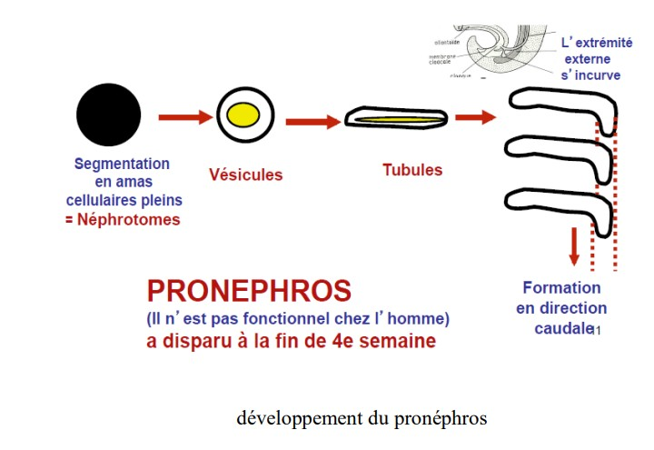
الشكل: يوضح تطور الكُليّة القحفية خلال الحياة الجنينية.
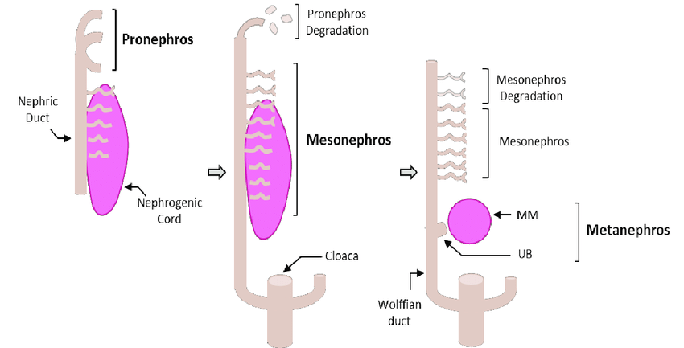
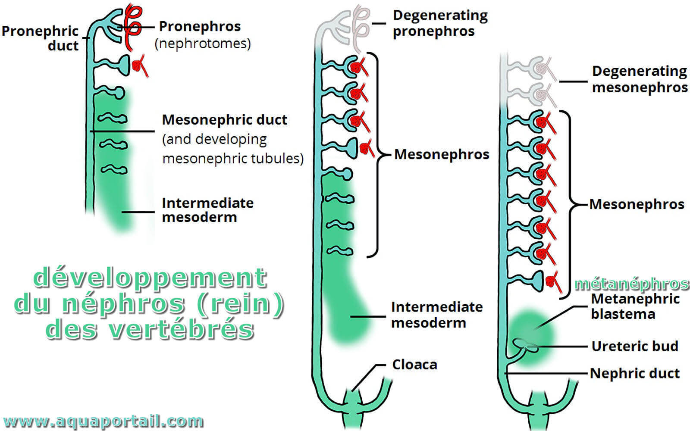
2-2 Le Mésonéphros
2-2 الكُليّة الوسطى (Mésonéphros)
Il apparaît au cours de la 4ème semaine, avant la disparition complète du pronéphros, dans la région thoracique et s’étend jusqu’à la région lombaire haute (L3).
يظهر خلال الأسبوع الرابع، قبل الاختفاء الكامل للكُليّة القحفية (Pronéphros)، في المنطقة الصدرية ويمتد حتى المنطقة القطنية العليا (L3).
La métamérisation du cordon néphrogène aboutit à des néphrotomes pleins, qui se creusent d’une cavité centrale et deviennent des vésicules, dont le nombre ne dépasse jamais les 30 du fait de l’apparition de certaines et la disparition des autres.
تؤدي التجزئة التي تحدث في الحبل الكلوي إلى تكوين الوحدات الكلوية الأولية، والتي تحوي تجويفًا مركزيًا، وتتحول إلى حويصلات. لا يتجاوز عدد هذه الحويصلات 30 بسبب ظهور بعضها واختفاء البعض الآخر.
Les vésicules s’allongent rapidement et s’incurvent en forme de S en direction caudale pour donner des tubules mésonéphrotiques.
تتمدد هذه الحويصلات بسرعة وتنحني على شكل حرف S نحو الأسفل، لتكوّن الأنابيب الكلوية الوسطى (Tubules Mésonéphrotiques).
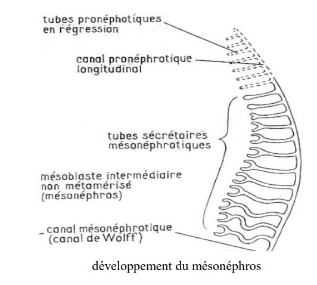
الشكل 4: يوضح تطور الكُليّة الوسطى (Mésonéphros) أثناء الحياة الجنينية.
Le Canal Mésonéphrotique (Canal de Wolff)
القناة الكلوية الوسطى (قناة وولف)
Un des tubules mésonéphrotiques des premières vésicules s’incurve et se prolonge en direction caudale où il s’abouche dans la paroi latéro-ventrale du cloaque ; une cavité commune entre l’appareil digestif et urinaire.
ينحني أحد الأنابيب الكلوية الوسطى المتشكلة من الحويصلات الأولى، ويمتد نحو الجهة الذيلية حيث ينفتح على الجدار الجانبي البطني للمذرق، وهو تجويف مشترك بين الجهازين الهضمي والبولي.
Ce prolongement est à l’origine du canal mésonéphrotique ou canal de Wolff.
يُعتبر هذا الامتداد أصل القناة الكلوية الوسطى أو قناة وولف.
Les vésicules qui se succèdent voient leurs tubules s’ouvrir dans le canal de Wolff.
الحويصلات المتعاقبة تفتح أنابيبها في قناة وولف.
Les tubules mésonéphrotiques se différencient en unités excrétrices fonctionnelles des futurs néphrons adultes.
تتمايز الأنابيب الكلوية الوسطى إلى وحدات إفرازية وظيفية تشكل النيفرونات المستقبلية في الكلى البالغة.
L’extrémité médiale du tubule se déprime en une cavité, et forme la capsule de Bowman.
ينخفض الطرف الإنسي للأنبوب ليشكل تجويفًا، مكونًا محفظة بومان.
La capsule enveloppe un peloton de capillaires qui se détache de l’aorte dorsale appelé glomérule.
تحيط المحفظة بشبكة من الشعيرات الدموية التي تنشأ من الشريان الأورطي الظهري، وتُعرف باسم الكبيبة.
L’ensemble forme le corpuscule rénal, lieu de la filtration du plasma sanguin et de la formation de l'urine primitive qui ira dans le tubule. Fig6.
يشكل هذا التركيب الجُسيم الكلوي، وهو موقع ترشيح البلازما الدموية وتكوين البول الأولي الذي ينتقل إلى الأنبوب الكلوي. الشكل 6.
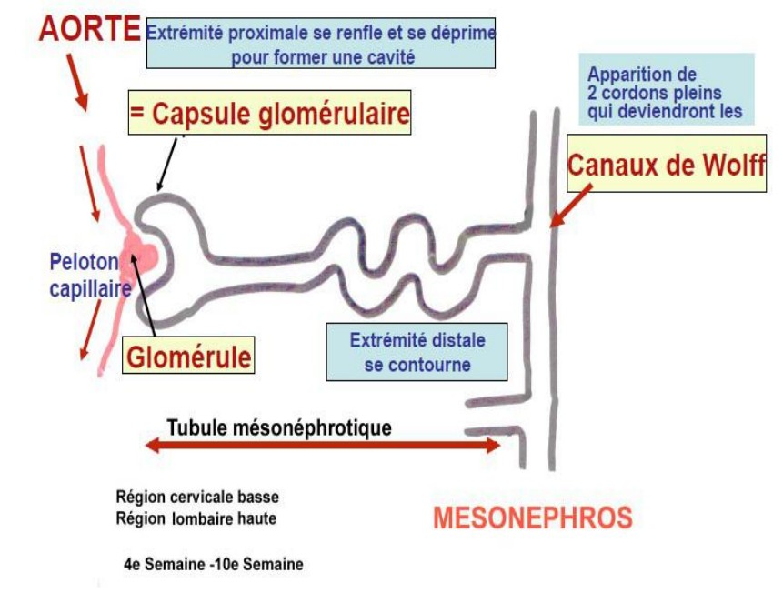
الشكل 6: يوضح تكوين الجُسيم الكلوي وعملية ترشيح البلازما الدموية.
L’involution du mésonéphros débute vers la 10ème semaine, à l’exception du canal de Wolff qui persiste chez le sexe masculin car il participera à la formation du tractus génital.
يبدأ انحسار الكلية الوسطى حوالي الأسبوع العاشر، باستثناء قناة وولف التي تبقى عند الذكور لأنها ستشارك في تكوين الجهاز التناسلي.
Fig05 : Vue transversale du développement du mésonéphros.
الشكل 05: مقطع عرضي لتطور الميزونيفروس.
2-3- Le Métanéphros ou Rein Définitif : Fig7
Il apparait au début de la 5ème semaine, alors que le mésonéphros se développe encore.
يظهر في بداية الأسبوع الخامس، بينما لا يزال الميزونيفروس في طور النمو.
Il résulte de l’association de 02 systèmes: système excréteur et système sécréteur.
ينتج عن اندماج نظامين: النظام الإخراجي والنظام الإفرازي.
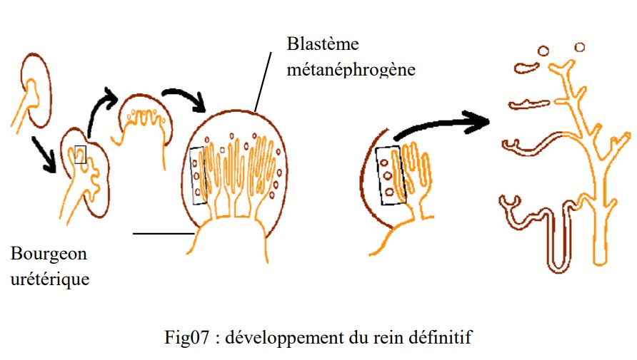2-3-a Développement du Système Excréteur
Il se forme à partir des bourgeons urétériques et commence à se développer au début de la 5ème semaine.
يتشكل من البراعم الحالبية ويبدأ في التطور في بداية الأسبوع الخامس.
Au début de la 5ème semaine, chaque partie distale d’un canal de Wolff donne un diverticule sacral avant son abouchement dans le cloaque: le bourgeon urétérique qui sera à l’origine des conduits collecteurs du rein, calices, bassinet et enfin uretère.
في بداية الأسبوع الخامس، تعطي كل نهاية قاصية من قناة وولف رتجًا عجزيًا قبل أن تفتح في الجيب البوليسي: البرعم الحالبي، الذي سيكون مصدر القنوات الجامعة للكلية، الكؤوس، الحوض الكلوي وأخيرًا الحالب.
Chaque bourgeon urétérique pénètre dans la partie terminale non métamérisée du cordon néphrogène appelé blastème métanéphrogène et commence à se ramifier en conduits qui s’entourent d’une coiffe de tissu du blastème donnant un aspect lobulé à l’organe.
يخترق كل برعم حالبي الجزء النهائي غير المتمايز من الحبل الكلوي، المسمى الكتلة البدائية الكلوية، ويبدأ في التفرع إلى قنوات محاطة بطبقة من نسيج هذه الكتلة، مما يمنح العضو مظهرًا فصّيًا.
Vers le milieu de la 6ème semaine, le métanéphros en développement est constitué de deux lobes séparés par un sillon.
بحلول منتصف الأسبوع السادس، يتكون الكلية النهائية النامية من فصين مفصولين بأخدود.
A la fin de la 16ème semaine, le rein est formé de 14 à 16 lobes.
في نهاية الأسبوع السادس عشر، تتكون الكلية من 14 إلى 16 فصًا.
Le bourgeon urétérique et le blastème métanéphrogène exercent des effets inducteurs réciproques. La différenciation de chacune de ces ébauches dépend donc des signaux inducteurs de l’autre.
يؤثر البرعم الحالبي والكتلة البدائية الكلوية على بعضهما البعض بتأثيرات تحفيزية متبادلة. وبالتالي، يعتمد تمايز كل من هذه البنى على الإشارات التحفيزية الصادرة عن الآخر.
2-3-b Développement du Système Sécréteur
Le néphron se développe à partir du blastème métanéphrogène.
يتطور النفرون من الكتلة البدائية الكلوية (المتانيفروجين).
Le tissu au contact des ramifications urétériques se condense puis forme une vésicule qui s'allonge et s’incurve en forme de S pour donner dans sa partie médiale la capsule de Bowman, au centre du quelle s'insère le glomérule rénal. L’ensemble forme le corpuscule rénal.
يتكاثف النسيج الملامس لتفرعات الحالب ثم يشكل حويصلة تستطيل وتنحني على شكل "S" لتكوّن في جزئها الأوسط كبسولة بومان، والتي يتمركز داخلها الكبيبة الكلوية. يشكل هذا التجمع الجسيم الكلوي.
En partie distale, le tube s'allonge considérablement et donne 04 segments de structure différente :
في الجزء البعيد، يستطيل الأنبوب بشكل كبير ويشكل أربعة أقسام مختلفة في البنية:
- Le tube contourné proximal (TCP) immédiatement en arrière du corpuscule rénal. Très pelotonné.
- الأنبوب الملتوي القريب (TCP) يقع مباشرة خلف الجسيم الكلوي، ويتميز بشكله الملتف جدًا.
- L'anse de Henle.
- عروة هنلي.
Développement du Tube Contourné Distal et Fonctionnement du Rein
تطور الأنبوب الملتف البعيد ووظيفة الكلية
Le tube contourne distal (TCD) qui se jette dans le tube collecteur.
الأنبوب الملتف البعيد (TCD) الذي يصب في الأنبوب الجامع.
C'est au cours du passage de l'urine primitive dans ces différents tubes que l'urine définitive est formée par phénomènes de résorption et de sécrétion. L'urine définitive se jettera dans le tube collecteur puis dans les autres voies excrétrices.
خلال مرور البول البدائي عبر هذه الأنابيب المختلفة، يتكون البول النهائي من خلال عمليات إعادة الامتصاص والإفراز. سيتدفق البول النهائي إلى الأنبوب الجامع ثم إلى المسالك الإخراجية الأخرى.
Dans chaque néphron, le développement a lieu de façon à ce que le tube contourné distal soit au contact du corpuscule rénal. Ce contact est fondamental pour le fonctionnement du néphron.
في كل نيفرون، يحدث التطور بحيث يكون الأنبوب الملتف البعيد على اتصال بالجسم الكلوي. هذا الاتصال ضروري لوظيفة النيفرون.
L'architecture définitive du rein est acquise entre la 5ème et la 15ème semaine de développement, et il est fonctionnel à partir de la 10ème semaine.
يتم اكتساب البنية النهائية للكلية بين الأسبوع الخامس والخامس عشر من التطور، وتصبح وظيفية اعتبارًا من الأسبوع العاشر.
L’urine produite se jette dans le liquide amniotique, qui sera réabsorbé par le fœtus et passe dans le tube digestif. Les déchets seront récupérés par le sang qui sera filtré par le placenta.
يتم تصريف البول المنتج في السائل الأمنيوسي، حيث يعاد امتصاصه بواسطة الجنين ويمر إلى الجهاز الهضمي. ثم تُستخلص النفايات من الدم وتتم تصفيتها عبر المشيمة.
2-3-c- Migration et Lobulation du Rein Définitif : fig8
Le métanéphros se forme en position pelvienne alors que les reins se situent dans la région lombaire.
يتشكل الكُلى النهائية (المتانيفروس) في وضعية حوضية، بينما تتوضع الكلى في المنطقة القطنية.
Il va subir donc une migration dite passive, secondaire au développement fœtal.
وبالتالي، تخضع هذه الكلى لعملية هجرة تُعرف بالهجرة السلبية، والتي تحدث نتيجة التطور الجنيني.
Elle est aidée par deux phénomènes :
تتم هذه الهجرة بمساعدة ظاهرتين :
- L'allongement du bourgeon urétérique.
- استطالة البرعم الحالبي.
- La diminution de la courbure du corps de l’embryon.
- انخفاض تقوس جسم الجنين.
Au cours de l’enfance, on note la disparition de l’aspect lobulé des reins observé à la naissance du fait de la croissance en taille, sans augmentation du nombre des néphrons.
خلال مرحلة الطفولة، يختفي المظهر الفصيصي للكلى الذي يُلاحظ عند الولادة، بسبب زيادة الحجم دون زيادة عدد النيفرونات.
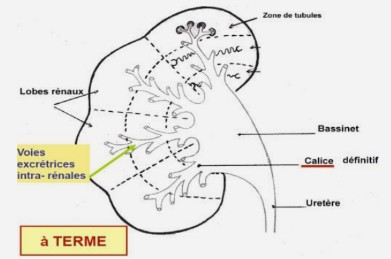3- Développement des Voies Urinaires Basses : fig09
Elles sont représentées par la vessie et l’urètre.
يتمثل تطور المسالك البولية السفلية في تكوّن المثانة والإحليل.
A la fin de la 5ème semaine, la future vessie et le futur canal ano-rectal s'abouchent au même endroit ; le cloaque ; partie terminale de l’intestin primitif, reliée à l’ombilic par le canal allantoïdien, formé en début de la 3ème semaine à partir du lecithocèle secondaire.
في نهاية الأسبوع الخامس، تلتقي المثانة المستقبلية والقناة الشرجية-المستقيمية المستقبلية في نفس النقطة، وهي المذرق، الذي يُعد الجزء النهائي من الأمعاء البدائية، ويرتبط بالسرة عبر القناة السُّرِّيَّة (الألانتويد)، التي تتشكل في بداية الأسبوع الثالث من الكيس المحي الثانوي.
Lors de la 7ème semaine, l'éperon périnéal ; cloison conjonctive divise le cloaque à sa jonction avec l’allantoïde en deux parties :
خلال الأسبوع السابع، يقوم الحاجز العجاني، وهو حاجز نسيجي ضام، بتقسيم المذرق عند اتصاله بالألانتويد إلى جزأين:
- En avant : le sinus urogénital et sa membrane urogénitale.
- أمامياً: الجيب البولي التناسلي وغشاؤه البولي التناسلي.
- En arrière : le canal ano-rectal et sa membrane anale.
- خلفياً: القناة الشرجية-المستقيمية وغشاؤها الشرجي.
Au sommet du sinus urogénital, le canal allantoïdien donnera la partie évasée de la vessie. Il se ferme ensuite, et ne reste qu'un cordon fibreux appelé l’ouraque, reliant le sommet de la vessie à l’ombilic.
في قمة الجيب البولي التناسلي، تتشكل المنطقة المتسعة من المثانة من القناة السُّرِّيَّة (الألانتويد)، ثم تنغلق لاحقاً، ولا يتبقى منها سوى حبل ليفي يُعرف بالأوراق، الذي يربط قمة المثانة بالسرة.
Le reste de la vessie et l’urètre dérive du sinus urogénital.
يشتق باقي المثانة والإحليل من الجيب البولي التناسلي.
L’incorporation progressive du canal de Wolff dans la paroi de la face postérieure du sinus urogénital entraine la séparation du bourgeon urétéral de ce dernier.
يؤدي الاندماج التدريجي للقناة الذئبية (وولف) في الجدار الخلفي للجيب البولي التناسلي إلى انفصال البرعم الحالبي عنه.
Par suite de l’ascension des reins, les uretères deviennent en position haute.
نتيجةً لارتفاع الكلى، تصبح الحالبات في وضعية أعلى.
L’incorporation de ces canaux est à l’origine d’une zone triangulaire postérieure de la vessie appelée trigone.
يؤدي اندماج هذه القنوات إلى تكوين منطقة مثلثية في الجدار الخلفي للمثانة تُعرف باسم المثلث المثاني.
La partie du sinus urogénital située en dessus de l’abouchement du canal de Wolff donnera la vessie tendis que la partie située en dessous donnera l’urètre.
الجزء العلوي من الجيب البولي التناسلي، الذي يقع فوق موضع اتصال القناة الذئبية، سيعطي المثانة، بينما الجزء السفلي سيعطي الإحليل.

4-1- Agénésie Rénale
C’est l’absence uni ou bilatérale du rein, qui peut être secondaire à une dégénérescence précoce du bourgeon urétéral.
هي غياب أحادي أو ثنائي للكلى، وقد يكون ناتجًا عن تنكس مبكر للبرعم الحالبي.
L’agénésie bilatérale est rare et incompatible avec la vie. Elle sera à l’origine d’un oligohydramnios qui confine le fœtus dans un espace très petit ce qui entraine une hypoplasie pulmonaire et des malformations de la face et des membres graves.
يُعد الغياب الثنائي للكلى (اللاإجينية الكلوية الثنائية) نادرًا وغير متوافق مع الحياة، حيث يؤدي إلى قلة السائل السلوي (الأمنيوسي)، مما يحد من المساحة المتاحة للجنين داخل الرحم، الأمر الذي يسبب نقص تنسج رئوي وتشوهات خطيرة في الوجه والأطراف.
4-2- Ectopie Pelvienne du Rein
L’ectopie rénale résulte d’une absence de migration uni ou bilatérale des reins lors de la décourbure du corps. Il reste en position basse dans le pelvis.
تحدث الكلية المنتبذة الحوضية نتيجة عدم هجرة إحدى الكليتين أو كلتيهما أثناء استقامة الجسم. تبقى الكلية في وضع منخفض داخل الحوض.
4-3- Rein en Fer à Cheval
Il résulte du rapprochement des reins et leur fusion lors de leur passage à travers le petit bassin au moment de la migration, donnant un rein unique et en fer à cheval. Il peut être source d'infections récidivantes.
يحدث عندما تقترب الكليتان من بعضهما وتندمجان أثناء مرورهما عبر الحوض الصغير خلال الهجرة، مما يؤدي إلى تشكيل كلية واحدة على شكل حدوة حصان. قد يكون هذا التشوه سببًا في التهابات متكررة.
4-4- Rein Polykystique
Il résulte d’un défaut de jonction entre la partie excrétrice et sécrétrice entrainant une absence d'abouchement du néphron dans le tube collecteur. L'urine produite s’accumule, et forme des kystes. Cette altération de la fonction rénale conduit à une insuffisance rénale qui impose une greffe rénale en urgence si l’atteinte est bilatérale.
يحدث بسبب خلل في اتصال الجزء الإفرازي بالجزء المفرز، مما يؤدي إلى عدم تصريف البول المنتج عبر النبيب الجامع، وبالتالي تتراكم السوائل مكونة كيسات. يؤدي هذا الاضطراب إلى فشل كلوي، مما يستلزم زراعة كلية بشكل عاجل إذا كان التأثر ثنائيًا.
4-5- Duplication Rénale (ازدواج الكلية)
- Uretère double : le bourgeon urétéral s'est scindé en deux et s’abouche doublement à la vessie.
- الحالب المزدوج: ينقسم البرعم الحالبي إلى قسمين ويصب في المثانة مرتين.
- Uretère bifide : formation incomplète d’un uretère double.
- الحالب المشقوق: تكوين غير مكتمل لحالب مزدوج.
- Reins doubles : le blastème métanéphrogène se divise en 2 du fait de la division en 2 des uretères. Les reins peuvent être au même niveau ou non. Il n’y a pas de retentissement sur la fonction urinaire mais les infections sont fréquentes.
- الكلى المزدوجة: ينقسم البرعم الكلوي إلى قسمين بسبب انقسام الحالبين. قد تكون الكلى في نفس المستوى أو لا. لا يوجد تأثير على وظيفة الجهاز البولي، ولكن الالتهابات تكون متكررة.
4-6- Fistules et Kystes de l'Ouraque (الناسور والكيسات في القناة السُرِّيَّة)
- L’absence de fermeture de l'ouraque conduit au développement de fistule reliant la vessie et ombilic qui devient le lieu de sortie de l'urine. C’est une urgence néo-natale qui impose une intervention chirurgicale.
- يؤدي عدم انغلاق القناة السُرِّيَّة إلى تطور ناسور يربط بين المثانة والسرة، مما يؤدي إلى خروج البول من السرة. هذه حالة طارئة عند حديثي الولادة تستدعي تدخلاً جراحيًا عاجلاً.
- La fermeture incomplète entraine le développement des kystes.
- يؤدي الانغلاق غير الكامل إلى تكوين كيسات في القناة السُرِّيَّة.
4-7- Hydronéphrose Congénitale (الاستسقاء الكلوي الخلقي)
- C'est une dilatation des cavités pyélo-calicielles qui s'accompagne d'une réduction du cortex rénal et donc du nombre de néphrons fonctionnels.
- هو توسع في تجاويف حوض الكلية والكؤوس، مما يؤدي إلى تقليل قشرة الكلية وبالتالي تقليل عدد النيفرونات الوظيفية.
- Elle est due à un trouble de l'évacuation de l'urine par l'uretère suite à la présence d’un obstacle sur sa partie haute.
- يحدث ذلك بسبب اضطراب في تصريف البول عبر الحالب نتيجة وجود عائق في الجزء العلوي منه.